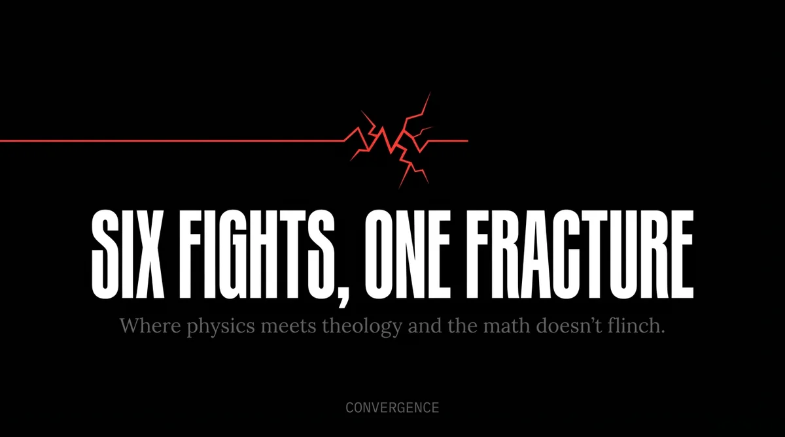
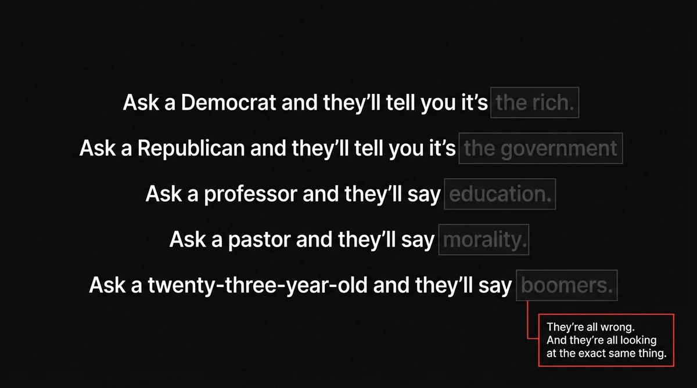
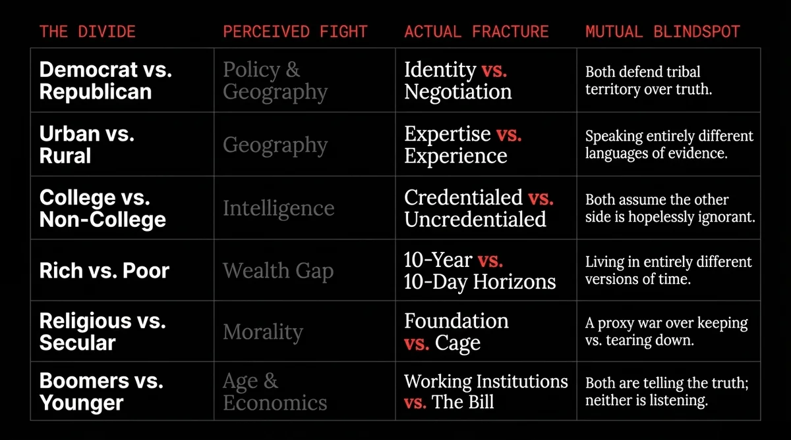
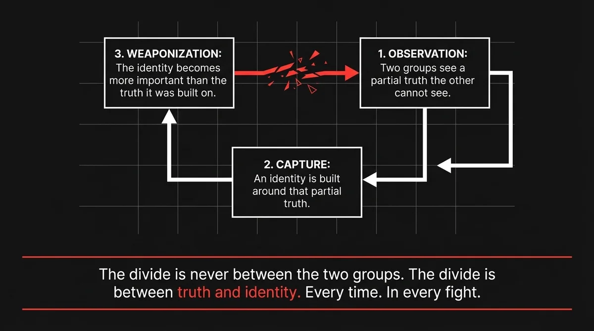
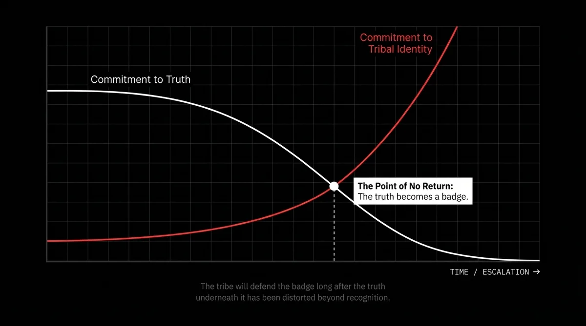
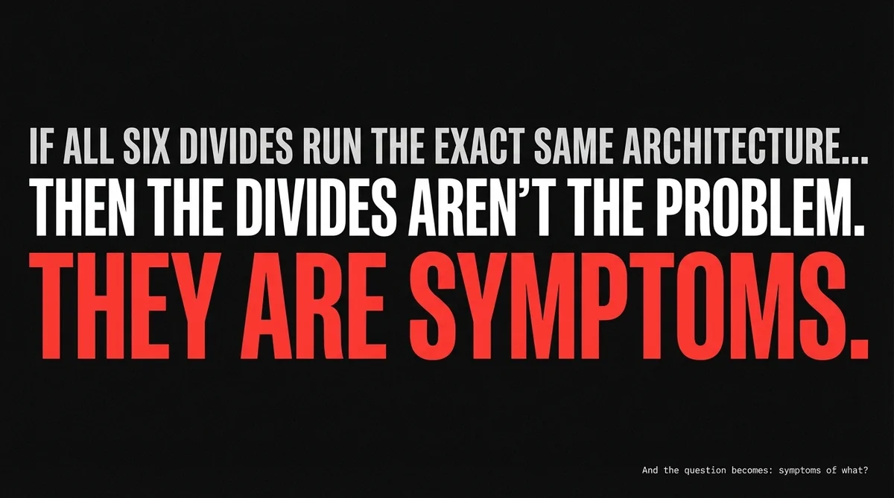
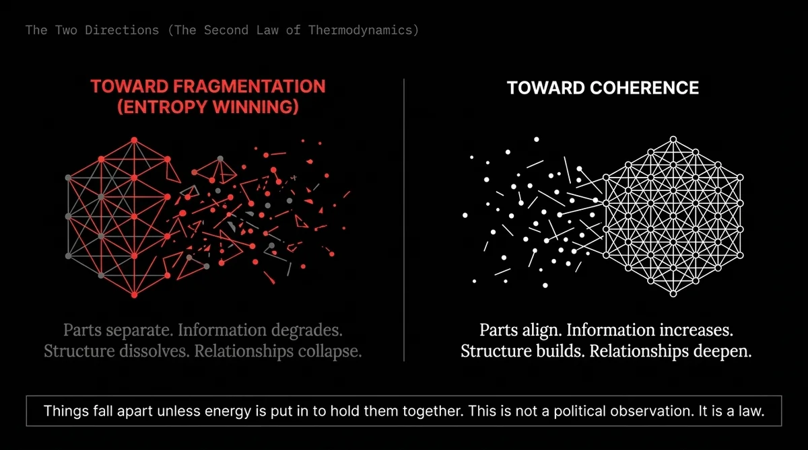
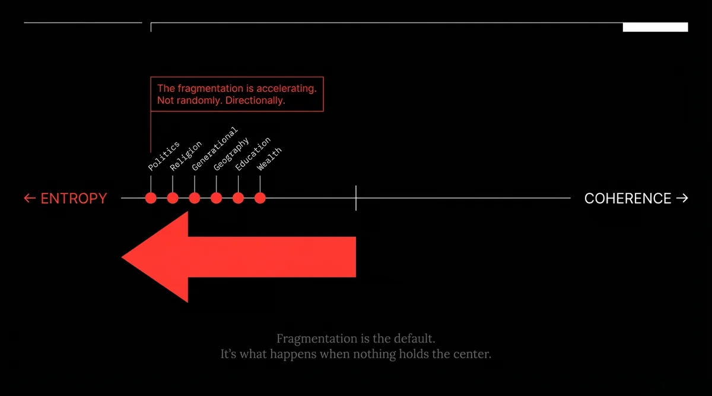
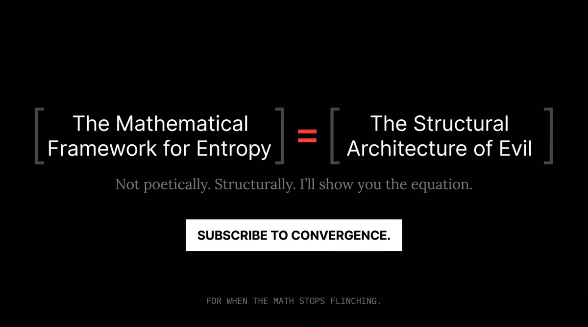

The Fall was not a moral lapse but a substrate-level fracture: entropy activated, coherence broken, time weaponized. Every physics of repair — thermodynamics, quantum coherence, information theory — says the same thing: the fix must come from outside the broken system and operate at the same depth as the damage. The Cross meets that symmetry requirement across seven independent dimensions, with each adversarial move in Genesis 3 answered by an exact divine counter-move in the Cross and Resurrection.

The Crack in the Foundation
My house settled. Not dramatically — no walls split, no floors buckled. Just a hairline crack in the foundation. A quarter-inch gap running through the concrete slab, barely visible unless you got on your hands and knees with a flashlight.
The contractor who came out did not suggest repainting the walls. He did not recommend new carpet. He looked at the crack and said: "This is in the slab. Everything above this — the framing, the drywall, the fixtures — those are cosmetic. The problem is in the substrate. The fix has to go to the same depth as the break, or it's not a fix. It's a disguise."
That sentence has not left me.
The Fall was not a moral lapse. It was not a spiritual misstep. It was not Adam making a bad decision that God then had to work around. The Fall was a substrate-level fracture — a break in the physical foundation of reality itself. Article 01 showed this: the measurement event collapsed superposition, activated entropy, fractured the Logos coupling, and introduced time as a dimension of decay. The damage went all the way down. It was not behavioral. It was not attitudinal. It was physical.
Which means the fix cannot be behavioral. It cannot be attitudinal. It cannot be a new set of rules, a better moral framework, a more enlightened consciousness. If the break is in the substrate, the fix must be in the substrate. The repair must go to the same depth as the damage.
This is the symmetry requirement. And it governs every single thing that happens at the Cross.

The Problem: Why Good Advice Cannot Save You
Every religion, every philosophy, every self-help system on earth operates on the assumption that the problem with human beings is above the substrate. The problem is ignorance (fix: education). The problem is desire (fix: detachment). The problem is bad habits (fix: discipline). The problem is wrong beliefs (fix: correct doctrine). The problem is social injustice (fix: revolution). Each diagnosis assumes the foundation is sound and the issue is in the superstructure.
Christianity alone diagnoses the problem as below the superstructure. Below morality. Below psychology. Below culture. The substrate itself is fractured. "The whole creation groans" (Romans 8:22) — not metaphorically, not poetically, physically. The second law of thermodynamics is not a feature of a well-designed universe. It is the scar of the Fall, the entropy that entered when coherence collapsed.
This is why good advice does not save. This is why moral improvement does not save. This is why therapy helps but does not save. These are all interventions above the substrate. They are the contractor repainting the walls while the slab is cracked. The paint may look better. The crack is still there. And everything built on a cracked foundation will eventually shift, settle, and fracture along the same line.
The Cross is not God giving better advice. The Cross is God repairing the slab.

The Physics: Symmetry Requirements in Repair
Physics has a deep principle that governs repair: the fix must be symmetric to the break. This shows up everywhere.
In thermodynamics, if you want to reverse an entropy increase, you need an equal negentropic input from outside the system. A closed system cannot decrease its own entropy — that is the second law. The entropy activated at the Fall requires negentropy injected from outside the closed system to reverse it. No internal rearrangement will suffice.
In quantum mechanics, if a system has decohered, re-establishing coherence requires coupling the system to a coherence source that is itself uncorrupted. You cannot use a decohered system to re-cohere itself. The noise source must be external, and the coherence source must be external.
In information theory, if a signal has been corrupted by noise, the receiver cannot reconstruct the original signal from the corrupted version alone — unless the original signal is re-injected into the channel at sufficient power to overwhelm the noise. Full restoration requires the sender.
Every framework says the same thing: the fix must come from outside the broken system, and it must operate at the same level where the break occurred.
The Fall broke the substrate — the physical, entropic, temporal, coherence-level foundation of human existence. The fix must:
- Come from outside the system (not a human solution)
- Operate at the substrate level (not moral, not psychological — physical)
- Match the depth and scope of the break (not partial, not approximate — exact)
Now look at what happened.

The Mapping: Seven Moves, Seven Counter-Moves
The adversary's strategy in Genesis 3 is not a single action. It is a sequence of structural attacks on the substrate of reality. And the divine response — spread across Incarnation, Cross, and Resurrection — matches each attack with an exact structural counter.
Not approximate. Not thematic. Row by row, move by move, the counter matches the depth of the break.
| # | Satan's Move (Genesis 3) | Structural Effect | Jesus's Counter-Move | Reference |
|---|---|---|---|---|
| 1 | Introduced measurement — provoked the observer to engage the apparatus | Forced collapse from superposition to definite (fallen) eigenstate | Became the measured — submits to measurement voluntarily; absorbs collapse into himself | Phil 2:6–8 |
| 2 | Collapsed one substrate into two — fractured the unified spiritual-physical reality | Created the spirit/matter divide | Absorbed both back into one — "God was in Christ, reconciling the world to himself" | 2 Cor 5:19 |
| 3 | Activated the entropy term — switched on $dS/dt > 0$ in the human system | Death, decay, second law in human experience | Injected negentropy from outside the closed system — Grace as anti-entropic force | Rom 6:23; 8:2 |
| 4 | Weaponized time — created the temporal frame as a dimension of decay | Time as the axis along which entropy accumulates | Defeated time — "the Lamb slain from the foundation of the world" | Rev 13:8 |
| 5 | Created noise in the channel — introduced the lie as a corrupting signal | Communication channel between God and humanity degrades | Became the noiseless signal — "I am the way, the truth, and the life" | John 14:6 |
| 6 | Made death the default trajectory — mortality the terminal state of every timeline | Every physical body decays; entropy wins every biological contest | Beat death physically — bodily resurrection | 1 Cor 15:54–55 |
| 7 | Fragmented consciousness — broke the unified awareness of the divine presence | Humans experience separation from God | Restored presence — "Today you will be with me in paradise" | Luke 23:43 |
Seven moves. Seven counters. Each one operates at the same level as the attack it answers. The adversary introduces measurement — the counter submits to measurement. The adversary fragments the substrate — the counter reunifies it. The adversary activates entropy — the counter injects negentropy. Move for move, the counter matches the depth of the break.
This is not theology decorated with physics language. This is the symmetry requirement of repair, expressed across seven dimensions simultaneously.

Why the Resurrection MUST Be Physical
This is the row in the table that most modern theology wants to spiritualize. "The resurrection is a metaphor for new life." "The resurrection happens in the hearts of believers." "What matters is the spiritual truth, not the physical fact."
The framework cannot permit this, and here is why.
Row 6 of the table: the adversary's move was to make death the default trajectory of the physical substrate. Bodies decay. Cells degrade. Organs fail. The second law of thermodynamics operates at the level of molecules, proteins, tissue — matter itself is under the entropy curse. The break is physical.
The symmetry requirement demands that the fix be physical.
If the Resurrection is only spiritual — if Jesus' body stayed in the tomb while his "spirit" ascended — then the substrate-level damage remains unrepaired. The slab is still broken. The contractor repainted the walls and left.
Paul understood this with an engineer's precision: "If Christ has not been raised, your faith is futile and you are still in your sins" (1 Corinthians 15:17). He does not say "if Christ has not been raised, you're missing an inspiring story." He says the entire error-correction protocol fails. You are still in your sins — still operating in the corrupted channel, still under the entropy term, still on the trajectory toward irreversible signal loss.
Because if the physical substrate was not repaired, the repair is incomplete. And an incomplete repair at the substrate level is not a repair. It is cosmetic. It is drywall over a cracked slab.
The empty tomb is not a nice addition to the Christian story. It is the load-bearing wall. Remove it and the entire structure of substrate-level repair collapses, because the damage was physical and the fix was not.

"Today": The Word That Breaks Time
One of the two criminals crucified alongside Jesus — a man with zero credentials, zero history of faithfulness, zero time remaining — says: "Jesus, remember me when you come into your kingdom" (Luke 23:42).
Jesus responds: "Truly I say to you, today (sēmeron) you will be with me in paradise" (Luke 23:43).
The word sēmeron is doing extraordinary work.
"Today" — not "eventually." Not "after a waiting period." Not "once you've been properly catechized." Today. The man is hours from death. He has no time to prove anything, earn anything, demonstrate anything. He has exactly one moment of coherent alignment with the Logos — one moment of honest recognition — and Jesus declares that this is sufficient.
From within the temporal frame, this is impossible. The man has accumulated a lifetime of entropy. His signal-to-noise ratio is catastrophic. He has no bandwidth, no codebook, no history of error correction. By any reasonable communication-theory analysis, this channel should be irrecoverable.
But Jesus is not operating from within the temporal frame.
"Today" is a word that belongs to the eternal frame. Article 18 showed that the Spirit actualizes without temporal constraint — the Cross reaches backward and forward because the Lamb was slain from the foundation of the world. When Jesus says "today," he is not marking a 24-hour period. He is declaring that the restoration is immediate because, from the eternal frame, there is no gap between the moment of coupling and the completion of repair.
The thief on the cross is the framework's most extreme test case. If the error-correction protocol requires credentials, he breaks it. If it requires time, he breaks it. If it requires progressive sanctification before access is granted, he breaks it. He has nothing except one moment of honest signal through a maximally noisy channel — "remember me" — and the system designer declares the channel restored. Today.
This is what grace looks like in the equations. The Grace term $G$ in the Master Equation is not earned. It is not proportional to the receiver's merit. It is injected by the system designer at full power, and the only requirement on the receiver's side is coupling — turning toward the signal source and allowing the connection. The thief coupled. The channel opened. The substrate-level repair applied.
Today.

What This Predicts
Prediction 1: The 7-row symmetry table should survive independent scrutiny. Each adversarial move should map to its stated counter-move at the same structural level. If any row operates at a different level — if the counter is shallower than the attack — the symmetry claim fails for that row, and the entire thesis weakens proportionally.
Prediction 2: The Resurrection must be physical, or the framework collapses. This is not a prediction so much as a load-bearing dependency. If historical evidence ever conclusively demonstrated that the Resurrection did not involve a physical body, the framework's substrate-repair model would be falsified — because the physical damage would remain unaddressed. The framework bets everything on the empty tomb. It cannot survive without it.

The Honest Audit
What we got right, what we're less sure about, and where we got carried away.
What's load-bearing — we'd bet on this
The symmetry requirement is real physics. Entropy reversal requires external negentropy. Decoherence reversal requires external coherence. Signal restoration requires the original signal. These are not framework-specific claims — they are established principles across thermodynamics, quantum mechanics, and information theory. The fix must match the depth of the break. We are on solid ground here.
The Fall was substrate-level. Entropy activation, coherence fracture, time creation — these are not moral or psychological events. They are physical restructurings of reality. The diagnosis is structural.
The 7-row table survives row-by-row testing. The adversary's move and the divine counter-move operate at the same structural level in every case. The correspondence is not forced — the Genesis text specifies the attack, and the Gospel/Epistle texts specify the counter, and the structural symmetry is there in the source material before we touch it.
The Resurrection must be physical, and Paul says so. 1 Corinthians 15:17 is not ambiguous. Paul stakes the entire Christian claim on a physical resurrection. Our framework agrees with Paul for the same reason: if the damage is in the substrate, the repair must be in the substrate.
"Today" means today. The thief on the cross received immediate restoration with zero credentials and zero preparation time. This is a direct test of whether the error-correction protocol requires anything from the receiver beyond coupling with the source. Jesus says it does not.
What's suggestive but needs more work
The adversary's "moves" as a deliberate sequence. The Genesis text records a serpent having a conversation and provoking a single action. The seven "moves" are our decomposition of the effects of that action into distinct structural dimensions. The decomposition is valid — the Fall really did fragment the substrate across these seven dimensions. But whether the adversary intended each dimension of damage, or whether these are simply the consequences of a single substrate-level break, is a question the text does not resolve.
The structural symmetry as "exact." The mapping is tight enough to be load-bearing. Whether it is tight enough to be called "exact" depends on how much rigor you require from that word.
The eternal-frame reading of "today." Traditional commentators read it as a promise for that literal day. Both readings are compatible with the text. Ours adds a physics layer that the text does not demand but does permit.
Where we got carried away
"Christianity alone diagnoses the problem as below the superstructure." This is too strong. Buddhism's diagnosis of dukkha as a fundamental characteristic of conditioned existence operates at something close to substrate level. We meant that Christianity alone identifies a historical event that broke the substrate, and that the fix must therefore be a historical event that repairs it.
The contractor analogy. It implies that the substrate of reality is simple — a slab, something a guy with a truck can assess. The actual substrate is the coherence structure of the entire universe.
The certainty of the seven-row format. Presenting the counter-moves as a clean numbered table creates an impression of completeness that we have not earned. We found seven. There may be more.
The article above is what we believe. This audit is what we know we haven't proven yet. Both matter.

We are finite minds reasoning about infinite God. Every model is a projection of higher-dimensional reality onto a lower-dimensional surface we can comprehend. We do not claim to have captured God in equations. We claim that when we look at His creation honestly — with the tools of physics and the revelation of Scripture — the same structure appears in both. Where our model limits what God can be, the limitation is ours, not His. We offer this work as worship, not as containment.